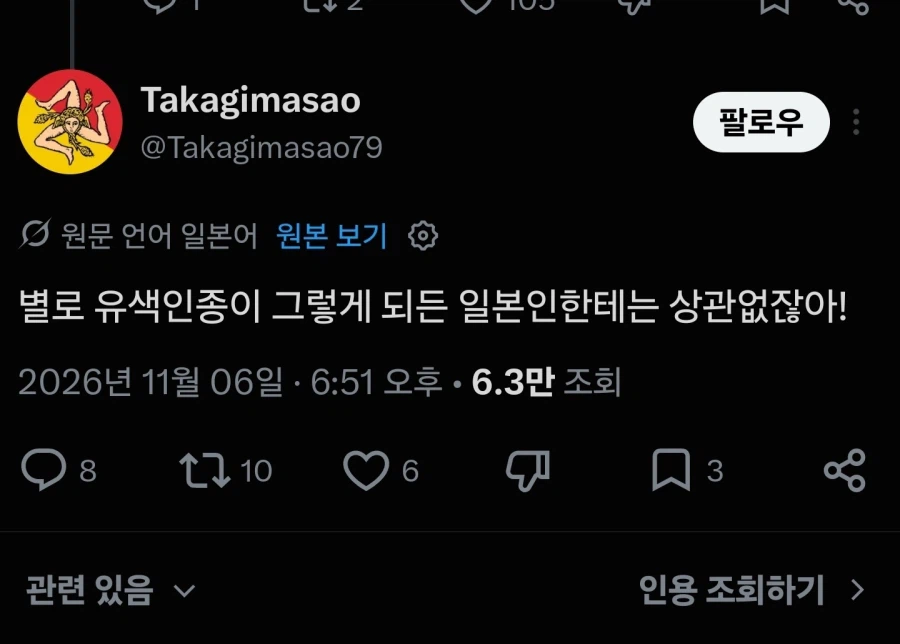
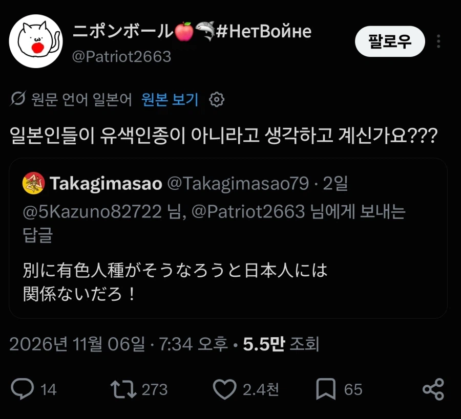
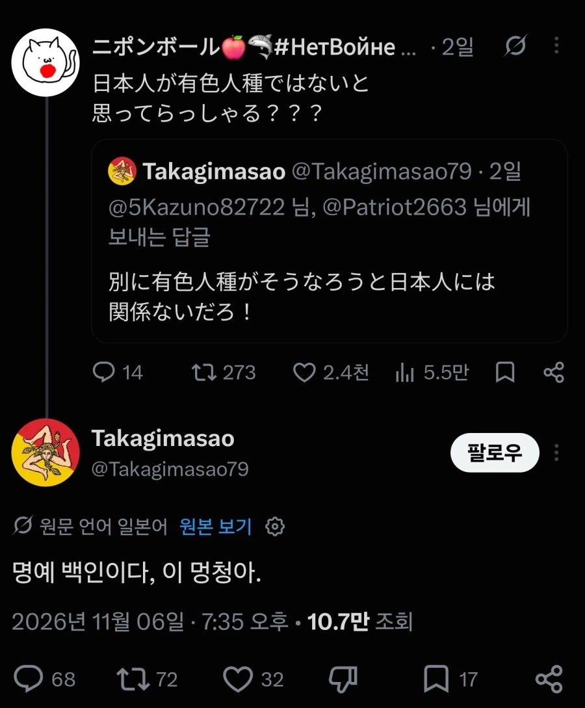
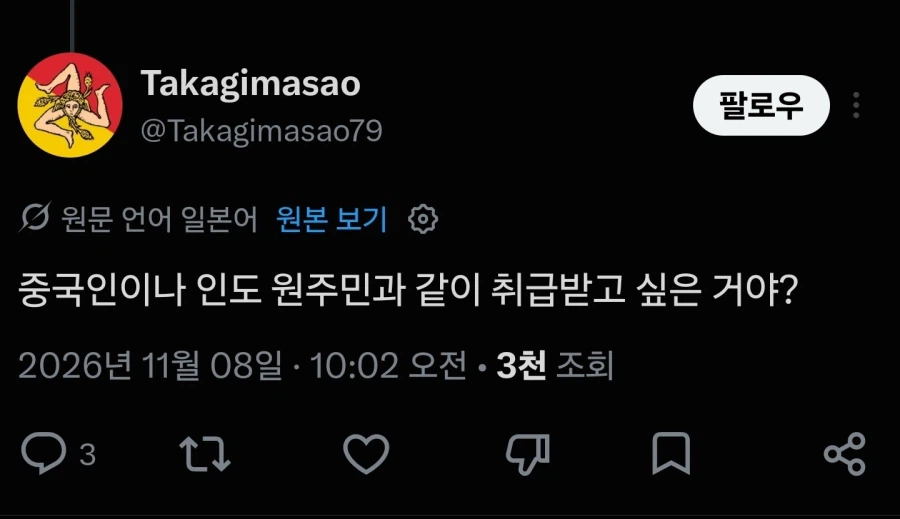
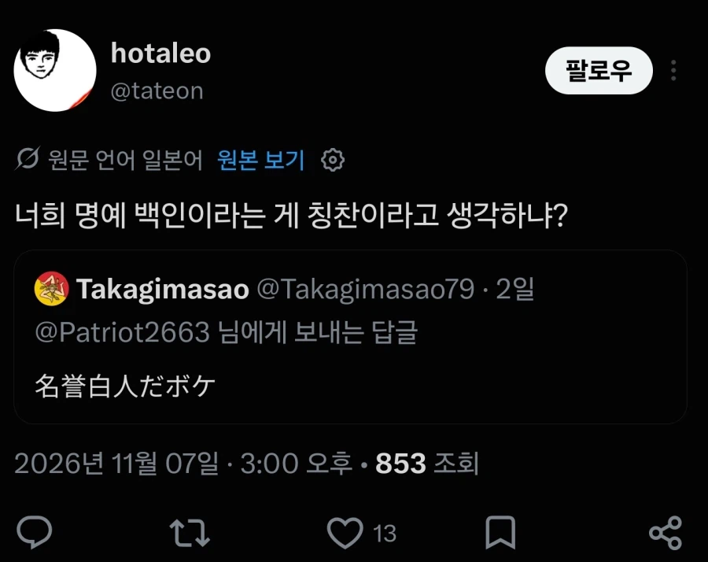
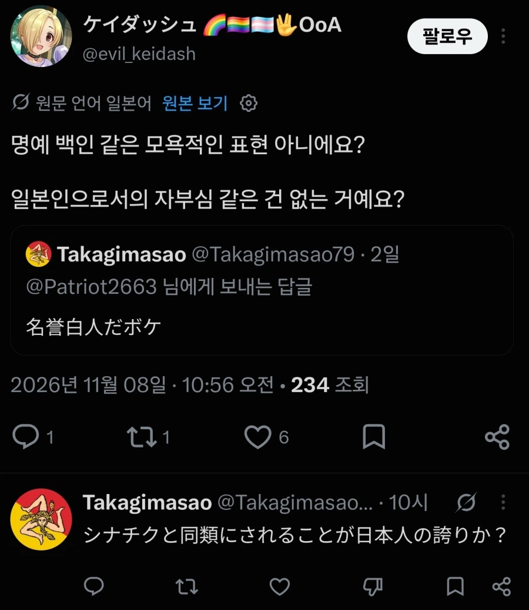
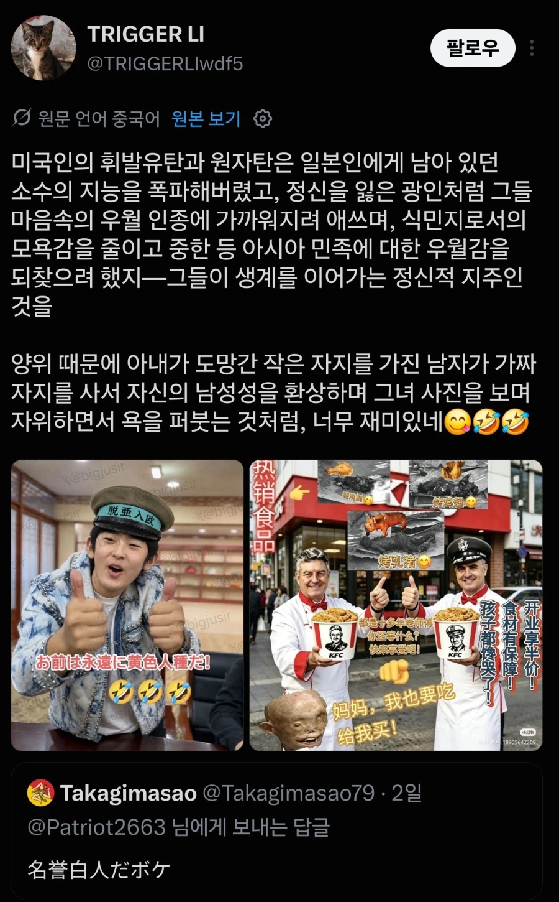

대 따 거







대 따 거
난 피부가 투명한거 아닌이상 유색인종이라 말하는것도 웃김
분탕이네
탈아입구 ㅋㅋ
ㅋㅋㅋㅋㅋㅋㅋㅋㅋ
씨발 그냥 인생이 시 짓기네 저놈들은ㄲㄲㄲㄲㄲㄲㄲㄲㄲ
닉네임이 한국 옳그떠인데
한국인 어그로꾼이겠지
원종이거나
못 배운 ㅉㄲ들 사이에서 배운 중국인들 말하는 거 보면 존나 잘 돌리더라 ㅋㅋㅋ
놀랍게도 일본은 진지하게 EU 가입을 시도한 적이 있다
건담 시드에 나오는 오브연합수장국까진 뭐 가공의 창작국가니니까 그렇다쳐도, 건담 더블오에서는 한국이 인혁련(중국러시아북한등 레드팀)에 속해있는데 일본은 유니온(북아메리카 + 태평양대서양)에 속해있음 ㅋㅋㅋㅋ 탈아입구 오져~
명예란 것은 무엇일까
아이리쉬 제외하면 다 유색인종 아니냐?
유색인종이라는 단어도 웃김 홍인들주제에 무슨 유색인종 ㅋㅋㅋ